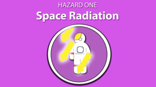
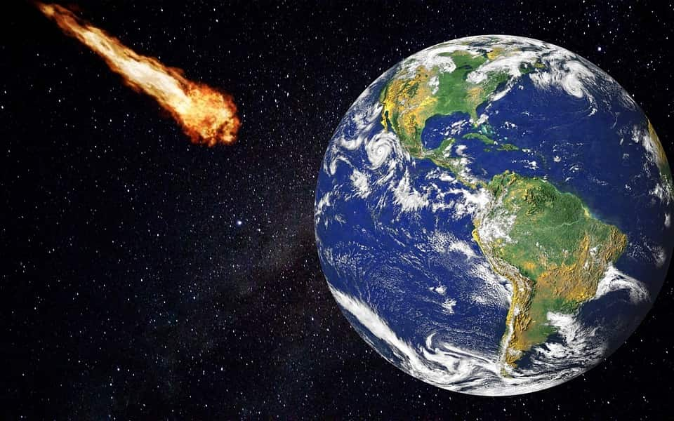
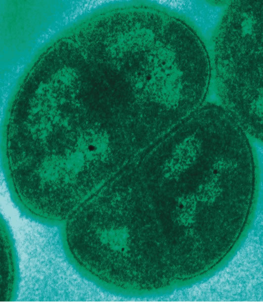

The efficiency of microorganisms
In this project we will show one of the problems encountered during a trip to space.
We will use the data collected by NASA itself and other researchers to expose one of the risks that a
human being faces when leaving their natural habitat.
Finally, explaining scientific concepts, we will show how we can overcome this challenge and how our
"super hero" can help us in this mission.
Information that was taken from NASA data to show the effects that a trip to space can have on a
human being.
Additional information taken from research and testing carried out by experts.
in the explore section, we show how we can solve this problem by showing
evidence that our theory makes
sense.



.jpg)

Radiation
The first hazard of a human mission to Mars is also the most difficult to visualize because, well, space
radiation is invisible to the human eye. Radiation is not only stealthy, but considered one of the most
menacing of the five hazards.
Above Earth’s natural protection, radiation exposure increases cancer risk, damages the central nervous
system, can alter cognitive function, reduce motor function and prompt behavioral changes. To learn what can
happen above low-Earth orbit, NASA studies how radiation affects biological samples using a ground-based
research laboratory.
The space station sits just within Earth’s protective magnetic field, so while our astronauts are exposed to
ten-times higher radiation than on Earth, it’s still a smaller dose than what deep space has in store.
To mitigate this hazard, deep space vehicles will have significant protective shielding, dosimetry, and
alerts. Research is also being conducted in the field of medical countermeasures such as pharmaceuticals to
help defend against radiation.
ESC TO LEAVE
Radioprotection
The protection set of protection or preventive protection or personnel protected by radiation is protected by
a set of protection mechanisms of protection or individualized protection by radiation.
Radioactive materials and their resulting radioactivity produced have existed in outer space since the origin
of the universe, starting to be used from sex. XIX. Radiation is the propagation of energy in the form of
electromagnetic waves or particles. The electromagnetic wave, in turn, is a form of energy constituted by
electric and magnetic fields, which vary and oscillate in planes perpendicular to each other, and which are
capable of propagating in space. In a vacuum, its propagation speed is 300,000 km/s.
Radioactive materials and their resulting radioactivity produced have existed in outer space since the origin
of the universe, starting to be used from sex. XIX. Radiation is the propagation of energy in the form of
electromagnetic waves or particles. The electromagnetic wave, in turn, is a form of energy constituted by
electric and magnetic fields, which vary and oscillate in planes perpendicular to each other, and which are
capable of propagating in space. In a vacuum, its propagation speed is 300,000 km/s.
ESC TO LEAVE
Panspermia
Planet Earth is the planet inhabited by us living beings. Also known
as a water planet, it is the largest of the four rocky planets that make
part of the Solar System. Planet Earth is known as the Blue Planet because it has
70% of its surface covered with water. Microorganism, bacteria, is also
found on our planet and which is highly resistant to radiation and other
environmental risks.
Planet Earth is known as the Blue Planet because it has
70% of its surface covered with water. Microorganism, bacteria, is also
found on our planet and which is highly resistant to radiation and other
environmental risks.
Extremophiles are organisms that live in
environments with conditions that are considered adverse to the most
common on the planet. We tend to think that nothing would survive the conditions
they survive, ranging from extreme temperatures and pH to high levels
radiation and salinity. Deinococcus bacteria do not exist in
Earth a place radioactive enough to deal with them. for supporting
radiation doses 3,000 times greater than humans.
ESC TO LEAVE
Bacteria Deinococcus
A type of bacteria that is highly resistant to radiation and other environmental hazards has survived outside
the International Space Station for three years, according to a new study.
The Deinococcus bacterium is found on Earth and has been nicknamed “Conan the Bacteria” by scientists for its
ability to survive cold, dehydration and acids.
It can withstand 3,000 times the amount of radiation that would kill a human and was first isolated in meat
cans subjected to sterilizing radiation.
ESC TO LEAVE
Bacteria Deinococcus
A bacterium, known to be extraordinarily resistant, managed to survive outside the International Space
Station for a year. According to the researchers, this ability to resist and adapt to adverse conditions
provides evidence that longer and more distant journeys are possible for these organisms.
The results of the research, carried out by the University of Vienna, were recently published by the journal
Microbiome. They also reinforce the belief that these microorganisms are so resistant that they can migrate
between planets and distribute life in the universe.
"These investigations help us understand the mechanisms and processes by which life can exist outside Earth,
expanding our knowledge of how to survive and adapt in the harsh environment of outer space," said Tetyana
Milojevic, author of the study.
ESC TO LEAVE